一、开场：回顾上期与本节定位
00:00 - 04:00
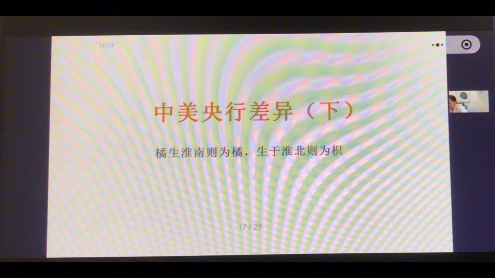
小爆姐开场回顾：上期已经讲完中美央行差异的三个维度——权力来源、政策目标函数、货币政策传导机制。本期接着往下讲剩余两个维度：
- 货币之锚——两国央行的货币分别锚定什么；
- 外部约束——美联储与中国央行各自面临的约束边界；
- 外加一个番外篇：中美存款准备金率的差异（货币政策执行成本）。
课程主题引语"橘生淮南则为橘，生于淮北则为枳"——同样的"央行"两个字，在不同国情下长成完全不同的物种。开场提问：一张纸币凭什么值钱？在布雷顿森林体系瓦解前，美元背后可兑换固定数量黄金（纸币=黄金的"仓单"）；金本位崩塌后，美元不再锚定黄金，转而锚定美国的国家信用。
本节框架：上期（上）讲"制度与传导"，本期（下）讲"锚与约束"，拼成中美央行的五维图景。
二、货币锚（一）：央行资产负债表=国家信用"账本"
04:00 - 10:00
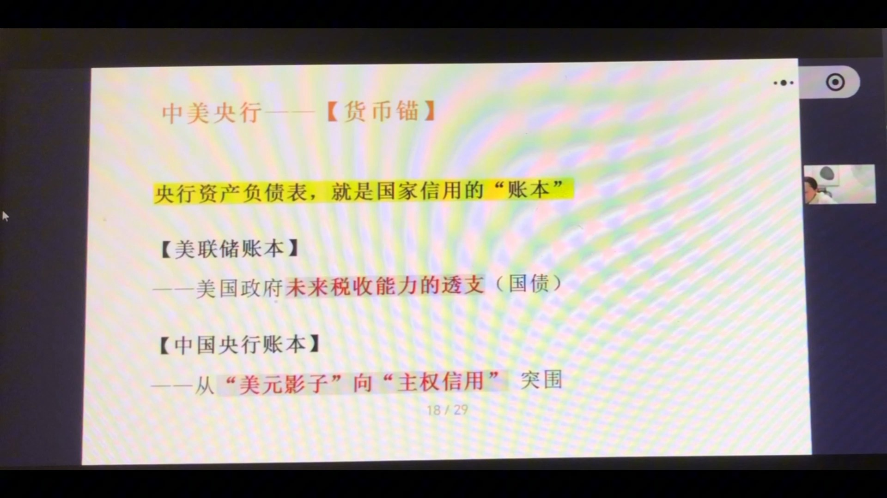
持有100美元纸币，本质上是美联储给你打了一张100美元的欠条。为什么愿意收？因为美联储资产负债表资产端放着的，是全球公认值得的东西——美国国家信用（综合实力：军事、经济、科技、金融）。
| 账本 | 内容 |
|---|
| 【美联储账本】 | ——美国政府未来税收能力的透支（国债）：发债=把未来的税收提前借出来花 |
| 【中国央行账本】 | ——从"美元影子"向"主权信用"突围：以前靠外汇占款发行人民币（锚定美元），未来转向主权信用 |
人民币发行的历史：从外汇占款起步
- 最初靠外汇占款发行：收进多少美元外汇，就发行相应的人民币 → 推导出人民币的锚定物其实是美元本身；
- 后来外汇占款不够用（出口不行就发不出钱、经济热于出口会通缩），走向金融机构再贷款与央行下场买国债；
- 全球闭环：中国生产商品→卖出去换美元→央行收美元印人民币→外汇储备投向美债→变相借钱给美国财政→美国居民拿福利/工资继续买中国商品。中国负责生产，美国负责消费；美元=润滑油，美债=锚。
隐含前提：这套"商品→美元→美债→商品"的超级循环，前提是美债必须是绝对安全的资产。一旦这个前提动摇，整个闭环就出现裂缝——而裂缝正在扩大：美元从有"含金量"变成有"含债量"，债的可信度一旦受质疑，货币就不再是魔法。
三、货币锚（二）：美联储的困境——"无风险资产"不再纯粹
10:00 - 20:00
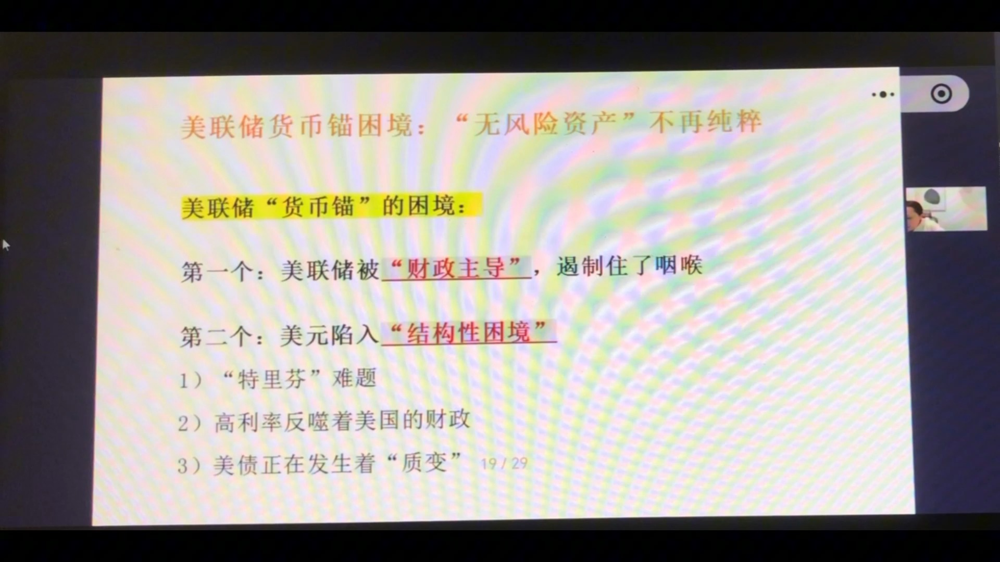
美联储"货币锚"的两大困境：
困境一：被"财政主导"遏制住咽喉
- 美国国债总额超38万亿美元，不到一年膨胀约2万亿（上次直播时还是36万亿）；
- 年度利息支出超过军费；2025整个财年财政收入才5万多亿美元——靠正常偿还基本无望；
- 唯一办法借新还旧；如果市场不愿低利率接新盘，就只能放弃通胀目标、印钞买债压利息——这就是财政主导的起点；
- 一旦美联储把"防止财政违约"当作第一要务，它就成了财政的提款机，独立性受巨大质疑，美元锚的支撑逻辑被侵蚀。
困境二：美元陷入"结构性困境"
- "特里芬"难题：作为全球储备货币，必须靠贸易逆差向全球输出美元（顺差就拿不到美元）。长期逆差→制造业外移→产业空心化→中产被挤压→反噬本土产业基础。中国若想人民币全球化，同样会走向巨额逆差——这是结构性硬约束。
- 高利率反噬美国财政：赤字大→吸引资金要付高息→利息支出更大→财政窟窿更大。美国卡在自我强化的困局里：不高息没人接盘，高息财政还不起。
- 美债正在"质变"：从低波动、避险、风险对冲工具，变成波动率与风险资产无异、甚至股债双杀（跷跷板效应消失）。美债从"避风港"变成"风暴源"。
小结：美元真正的锚=美国信用，但一旦开始依赖印钞机维持，这个锚就从"定海神针"变成"导火索"。
四、货币锚（三）：中国央行突围——一场漫长的"断奶"
20:00 - 30:00
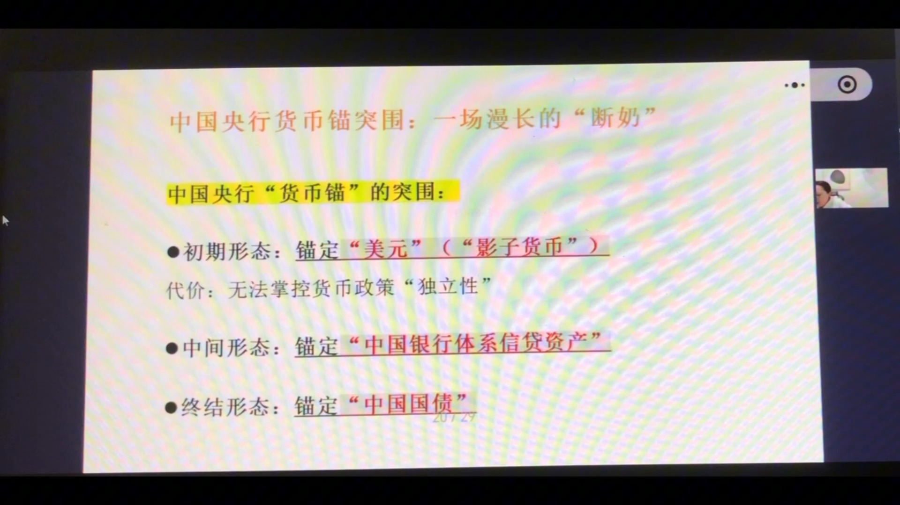
2014年之前，中国央行资产负债表上占比最大的是外汇占款——每投放一笔人民币，背后都有对应的美元。人民币是美元的影子货币，借美元信用印出来的。
三个形态
| 形态 | 内容 |
|---|
| 初期形态 | 锚定"美元"（影子货币）——借助美元背书发货币；代价：无法掌控货币政策"独立性"，被锁死跟随美国节奏（美国宽松→被迫宽松；美国紧缩→资金外流被迫紧缩） |
| 中间形态 | 锚定"中国银行体系信贷资产"（对其他存款性公司债权/金融机构再贷款）——把基础货币借给银行，底层是实体经济的真实回报率，锚从外部信用背书转向内部经济背书 |
| 终结形态 | 锚定"中国国债"——基础投放靠买国债完成，人民币真正基于中国主权信用发行，与美元周期被动脆弱的关系系统性切断 |
为什么15年后必须突围？因为外汇占款占比下降：经济增速高于出口时，货币勾兑在出口赚的外汇上→货币发不出来→经济远好于货币体量→通缩。
借来的信用 vs 挣来的信用：以前人民币能发出来，靠的是借美元和外汇储备的信用；未来要靠自己的主权信用（国债+银行体系+实体经济）挣回来。货币的锚必须掌握在自己手里——目前还在路上。
五、小结：中美货币锚差异——失去神性 vs 脱胎换骨
30:00 - 40:00
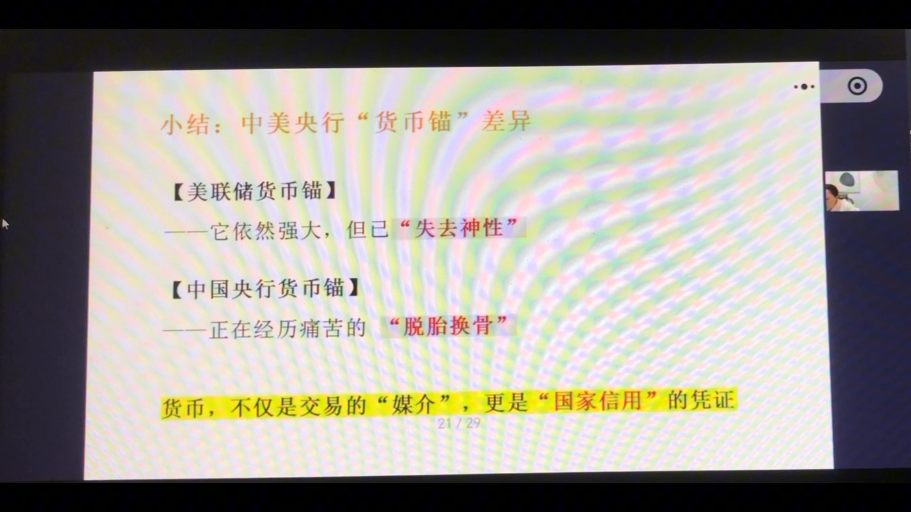
两个国家的货币锚，走向完全不同的路：
| 货币锚 | 特征 |
|---|
| 【美联储货币锚】 | 诞生于二战后全球第一的综合国力（工业/科技/军事/制度影响力共同构成信用地基），曾经强大且神圣；如今被内部财政纪律一点点侵蚀——债务失控、赤字常态化、财政与货币界限模糊。市场开始质疑：美元信用从"不可质疑的信仰"变成"可讨论的风险"，它依然强大，但已"失去神性" |
| 【中国央行货币锚】 | 人民币自身没有任何霸权基础，能走的路只有一条：证明一个发展中国家的货币信用可以不寄生在任何外部霸权之上。靠三样东西：庞大的工业体系 + 完整纵深的产业链 + 巨大的市场。艰难但一旦成功，就获得真正的主权信用闭环——正在经历痛苦的"脱胎换骨" |
两个延伸观点
- 货币不只是交易的"媒介"，更是"国家信用"的凭证——谁能守住凭证的含金量，谁就在全球秩序中掌握主动权，这才是"货币战"的底层逻辑；
- "内债不是债"是错的：主权信用不分内外，国债是一个国家最基本、最核心的承诺。一旦对内部违约/技术性违约，市场不会再讨论内债外债，只会重新评估"这个国家守不守约"——货币含金量归零，代价太大。无论如何，国债不能违约。
六、外部约束（一）：非对称博弈——无约束战争 vs 带镣之舞
40:00 - 45:00
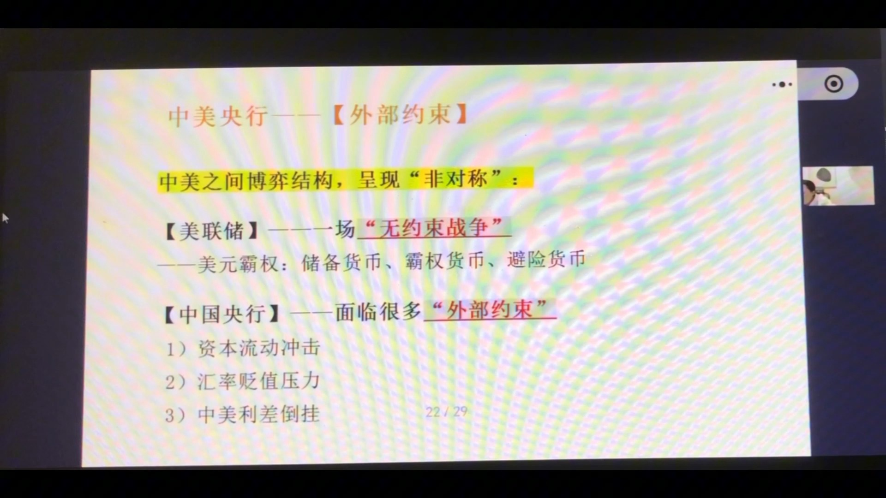
汇率课讲过的不可能三角（货币政策独立性、汇率稳定、资金自由流动——三者不可兼得）对美联储无效：美元是全球霸权货币，美联储拥有其他央行都不具备的能力——把货币政策的外部成本直接转嫁给全世界。
- 宽松（降息）：美元溢出→通胀外溢→全球跟着通胀——美国一宽松=向世界输出通胀；
- 紧缩（加息）：息差拉大→海外资金回流→全球流动性被抽走→新兴市场资产暴跌、汇率承压——美国一紧缩=抽全球资产的流动性；
- 美元本身是结算货币、储备货币、避险货币，永远不用担心汇率崩盘，不需要看任何人脸色。
中国央行：带着镣铐在跳舞
人民币没有任何霸权优势，且面临三大外部约束：
- 资本流动冲击；
- 汇率贬值压力；
- 中美利差倒挂。
所以中国央行看到数据也不能立刻动，必须先修"防御工事"——建立资本管制、汇率管理、宏观审慎的调控框架，在美元潮汐冲击下给国内经济争取政策自主空间（尤其是降息空间）。中美博弈结构是非对称的：美联储是进攻方/出招方（成本无限倾销），中国是防守方/接招方（只能靠自己把风险硬扛下来）。
七、外部约束（二）：回旋镖效应——美元霸权的唯一软肋
45:00 - 52:00
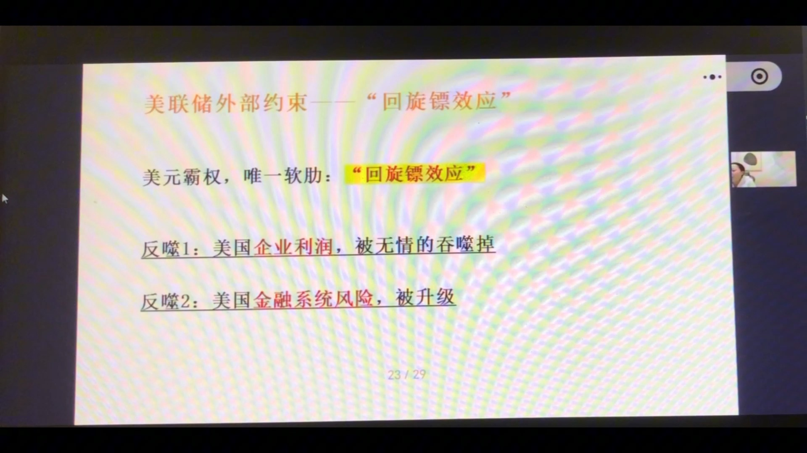
美元霸权当然有软肋——加息过猛时，美元持续吸血全球流动性，把欧洲、中国等关键经济体压入衰退，而衰退最终反噬回美国自己，这就是"回旋镖效应"：
| 反噬 | 机制 |
|---|
| 反噬1：美国企业利润被吞噬 | 苹果、特斯拉等跨国企业大量收入来自海外；全球被抽干流动性→海外需求下滑→跨国企业利润缩水→美股盈利预期与股价受冲击 |
| 反噬2：美国金融系统风险升级 | 全球经济失速→避险情绪加剧→信用利差走扩→融资市场冻结→没人敢持风险资产→全球风险资产暴跌→反噬华尔街 |
- 真实发生过两次：2016年美国持续加息引发全球剧烈波动（中国承压）→回旋镖反噬→美联储停止加息；2019年全球增长下行+金融环境紧缩→美联储转向降息；
- 美联储并非金刚不坏之身，它的约束不在汇率上，而在全球系统的稳定性上。
比喻：美联储像一头在瓷器店里跳舞的大象——主观上不想打破瓷器（全球市场），但每走一步，周围脆弱的新兴经济体都瑟瑟发抖；一旦跳得太猛，瓷器碎一地，飞出的碎片最终也会扎到大象自己脚上。回旋镖效应=美元霸权唯一的边界。
八、外部约束（三）：中国央行的"防火墙/盾牌"
52:00 - 70:00
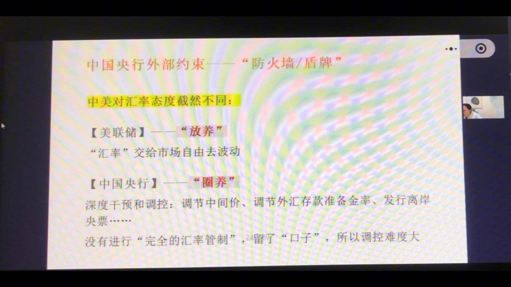
中美对汇率的态度截然不同：
| 央行 | 态度 |
|---|
| 【美联储】——"放养" | 汇率交给市场自由波动；法定任务只管通胀与就业两件事，汇率没有压力（自身是避险货币） |
| 【中国央行】——"圈养" | 深度干预和调控：调节中间价、调节外汇存款准备金率、发行离岸央票…… |
为什么中国能顶着利差倒挂降息？——资本管制=防火墙
- 本轮降息前，美联储政策利率5.25-5.5%，中国2%以下；按教科书逻辑中国应资金外逃、汇率崩盘、被迫加息——但并没有崩盘；
- 因为资本管制：资金无法自由出境套利，即使利差倒挂，也难以形成无限卖出人民币的单边攻击——防火墙生效，给了中国做逆周期调节（经济弱时托底）的空间；
- 没有这道墙，独立货币政策根本不存在：资金奔涌而出、汇率一塌糊涂，就只能被迫跟着美国加息，反而伤害本已偏弱的经济。
调控哲学：防"单边"，不防波动
- 中国不是追求汇率固定在某个数字（如7.0不破），而是希望汇率在合理区间内波动；
- 不能接受单边趋势（单边快速贬值尤其不能接受）——不能接受快速、无脑、滚雪球式自我强化的趋势；
- 方法=用时间换空间：技术手段干预（调中间价/外汇存准/央票）让贬值慢一点、做空成本变高，把压力逐步释放；
- 区别于土耳其式自杀式防守（疯狂加息硬摁资金）；
- 终极手段：卖外汇砸盘——但只有3万多亿美元，相对M2杯水车薪，一旦单边预期失控，砸光外汇也兜不住，所以干预要果断、要抢在预期形成前。
留了口子，所以"既犹豫又果断"
中国没有完全汇率管制：经常账户原则上开放（进出口业务正常），金融资本账户也留缝（沪港通、债券通）。因此降息时很克制（怕利差拉大钱外流，政策利率只降0.1%）；但汇率干预时很果断（怕失控形成单边）。
比喻：中国央行像潜水艇——深潜大海，内部气压（经济、就业、信用稳定）要搞好，外部深海压力（美元潮汐、加息抽流动性）要顶住；外壳=资本管制，没有这层壳就是"裸奔"。美联储一加息，所有央行跟着加息，不是脑子坏掉，是没这层壳别无选择。壳破了就不是震荡，而是巨大的灾难。
九、外部约束（四）：利差倒挂成为新常态——从"死守汇率"到"利用汇率"
70:00 - 79:00
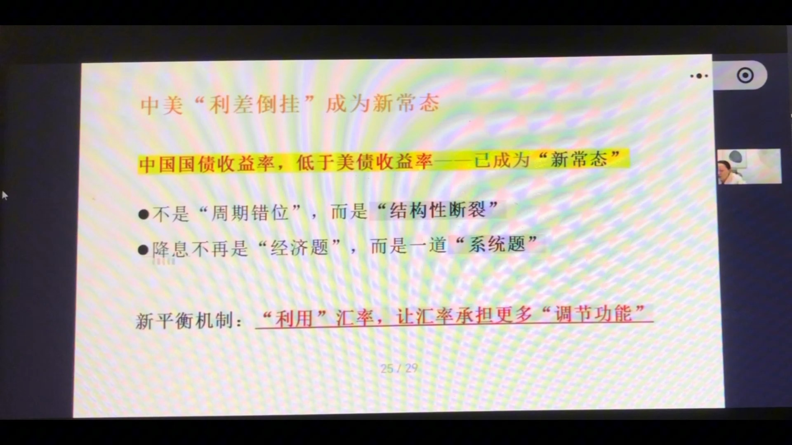
市场旧共识：发展中国家利率应高于成熟经济体（经济增速高→通胀高→政策利率高）。但现在常识被打破：中国国债收益率低于美债收益率——已成为"新常态"。
- 不是"周期错位"，而是"结构性断裂"——长期处于这种状态，底层一定有深层次结构性问题；
- 降息不再是"经济题"，而是一道"系统题"：以前降息只为拉增长、拉就业；现在每次降息都在测试底线——汇率扛不扛得住？资本流动底线在哪？预期会不会失控？利差越大越像在钢丝上跳，所以降息越来越克制（谈很久只降0.1%）；
- 新平衡机制："利用"汇率，让汇率承担更多"调节功能"——以前是"我不能动利率，因为一碰利率汇率受不了，所以死守汇率"；现在变成"我为了经济一定要动利率，既然要动利率，就允许汇率多动一点"。
汇率成为辅助工具
- 人民币汇率波动弹性这两年逐步上升，震荡幅度变宽；
- 适当贬值应被理解为托经济的成本：要降利率就接受汇率走贬——汇率不再是单纯的风险，而是辅助工具；
- 例子：出口承压→主动让汇率贬一点促出口；结汇不好→适度升值逼大家结汇（一把升值4个点，存在外面的钱就缩水）；
- 汇率没有固定数字，"谱"只在央行心里——既要防、又要守、还要利用，所以中国央行要做的事远比美联储多得多。
思维转变：从"死守汇率"到"利用汇率"——外部环境变了、内部情况也变了，两边一夹击，倒逼出新的平衡方式：汇率当"减压阀"，以时间换空间。
十、小结：外部约束差异——绝对力量 vs 防御艺术
79:00 - 82:00
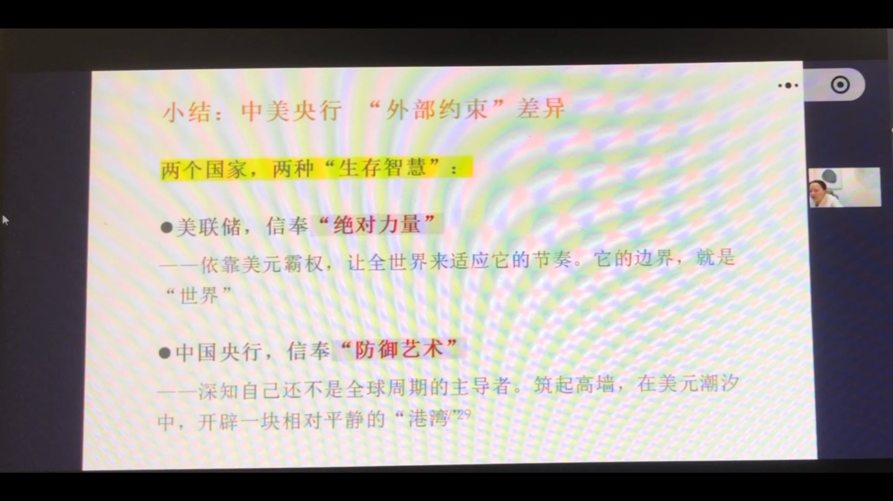
两个国家，两种"生存智慧"：
| 央行 | 生存智慧 |
|---|
| 美联储，信奉"绝对力量" | 依靠美元霸权，让全世界来适应它的节奏；用全球震荡换取美国内部稳定。它的边界，就是"世界"——除非加得太猛导致全球主要经济体崩溃，否则不会收手 |
| 中国央行，信奉"防御艺术" | 深知自己还不是全球周期的主导者；筑起高墙，在美元潮汐中开辟一块相对平静的"港湾"。它的边界，是"国门" |
金句：强者输出风险，智者隔离风险。这不是道德审判，是国际金融的现实生存法则——位置不一样，屁股决定脑袋，都是必然选择。
十一、番外（一）：美联储为何把存款准备金率降到0？
82:00 - 90:00
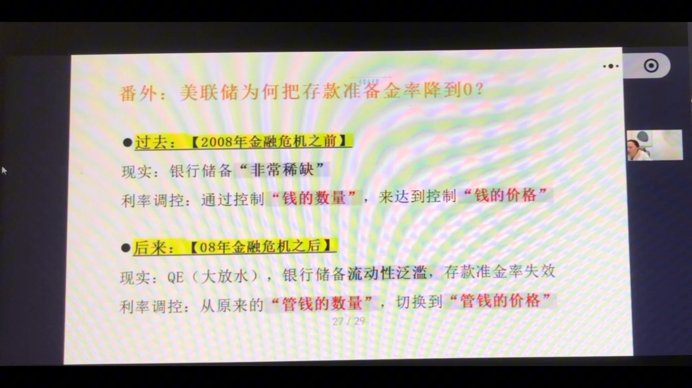
先区分两个概念：存款准备金率=要求银行把存款的百分之几存在央行；存款准备金利率=存在央行给你多少利息。美联储是把存款准备金率降到了0（银行放贷的钱不再需要存放在美联储）。
| 阶段 | 逻辑 |
|---|
| 过去：【2008年金融危机之前】 | 银行储备"非常稀缺"——存美联储没利息、银行倒贴成本，所以银行只放法定最低比例、其余全部贷出去，长期紧绷。利率调控=通过控制"钱的数量"来达到控制"钱的价格"（下场买卖一点国债，市场利率就上下波动） |
| 后来：【08年金融危机之后】 | QE（大放水）买美债→钱变相灌进银行体系→银行储备流动性泛滥，存款准备金率失效（设5%、10%都没意义）。利率调控从"管钱的数量"切换到"管钱的价格"：给存款准备金付利息，并把利率与政策利率挂钩——准备金利率=市场利率的地板价/走廊下限（银行不会以更低价格放贷，躺赚利息），加息降息直接调这个利率即可 |
- 08年之后准备金率已没什么用，只是一直没清理；2020年疫情时美联储借机表态救市，把这条过期的旧规则取消，降成0；
- 所以降成0不是因为监管放松，而是政策利率调控方式变了——从管数量转向管价格，旧工具在新体系下自然失效。
十二、番外（二）：中国央行为何保留存款准备金率？
90:00 - 104:00
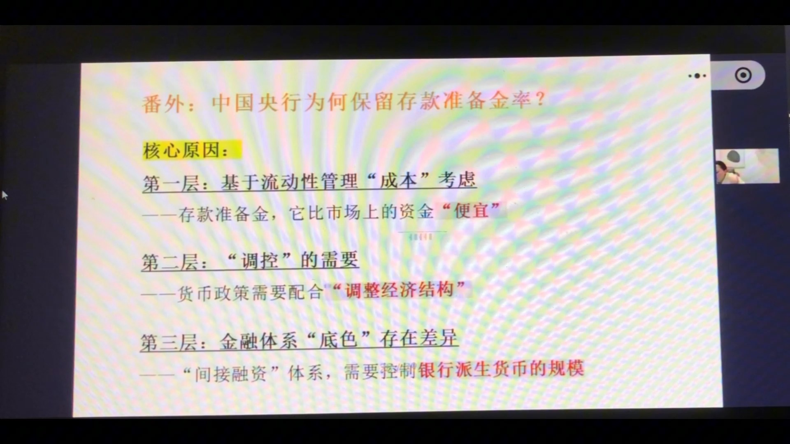
中国仍保留存款准备金率，不是因为保守，而是在中国的结构里，它是一个成本低、控制力强、还能顺手做结构性调整的非常有效的工具。核心原因分三层：
第一层：基于流动性管理"成本"考虑
当出口好但经济不好时，外汇占款印出的人民币会多出来，必须收回否则通胀。两种收法：
- 西式（稀释）：发行央票、公开市场操作——要给市场利率，长期持续付息，成本不低；
- 中式：提高存款准备金率——法定必须存、利率又低，等于低成本锁定流动性的蓄水池，性价比极高——存款准备金比市场上的资金"便宜"。
第二层："调控"的需要
货币政策需要配合"调整经济结构"：只降息的话，银行仍只愿把钱借给大企业、国企（风险小），小微企业、民企、三农拿不到钱。配合降准则不同——定向降准：你做央行希望的事（投向小微/制造业/特定领域），我就调低你的准备金率→银行负债端多出可用资金、成本降低，形成激励。存款准备金不只是货币工具，还带了产业政策属性，像指挥棒一样引导资金去向。
第三层：金融体系"底色"存在差异
美国是直接融资体系（大企业跑债市股市），美联储把钱的价格定好、靠市场自行传导即可。中国是"间接融资"体系——资金配置主角是银行信贷。如果不计提准备金，银行通过"贷款→存款→再贷款"循环可以把信用扩张到无限大、风险无限大；每圈计提准备金=给货币派生次数和规模设上限，控制银行派生货币的规模——对高度依赖银行信贷的庞大经济体来说，这是"物理刹车"，非常重要。
总结：美国放弃准备金率是因为它在新的利率调控体系下已无用、且传导是直接的；中国保留它，解决三个问题——①低成本管理流动性；②引导信贷结构、辅助经济结构调整（指挥棒）；③约束资金派生规模（物理刹车）。
十三、总结：中美央行"五维图景"——两个物种，不能套用
104:00 - 109:00
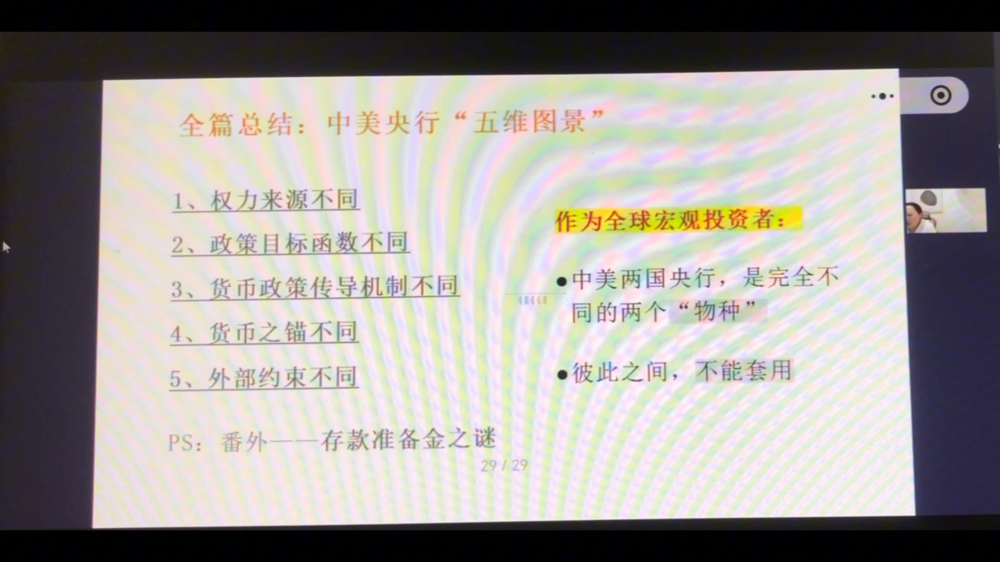
整个"中美央行差异"共29页PPT，五个维度：
- 权力来源不同（上期）；
- 政策目标函数不同（上期）；
- 货币政策传导机制不同（上期）；
- 货币之锚不同（本期）；
- 外部约束不同（本期）；
- PS：番外——存款准备金之谜（货币政策执行成本）。
作为全球宏观投资者：中美两国央行，是完全不同的两个"物种"，彼此之间不能套用——不能用美联储的逻辑预测中国央行的行为，也不能用中国央行的逻辑押注美联储。市场误判和踩雷，大多源于拿一个物种的行为逻辑去预测另一个物种。承认差异不是学术问题，是宏观投资者的生存问题。
课程展望
- 货币政策系列共讲了货币、利率、汇率、中美央行差异四块内容（约三十页PPT）；
- 下一节是货币政策总结课（复习课），把整个货币政策在投资框架里的作用串起来；
- 之后进入新篇章——宏观经济周期。
课程知识卡片（专业版）
以下为课程配套的专业版知识卡片，标题为"货币政策第16期：中美央行差异（下）——货币锚、外部约束与政策成本的深层博弈"，汇总了本期核心知识点的完整框架。

专业版卡片文字摘要
- 知识点1：美元锚——从黄金信用到被财政侵蚀的国家信用。锚的本质=国家信用开出"欠条"；全球闭环"中国生产→赚美元→买美债→美国消费→再买中国商品"；锚的动摇=美债绝对安全前提受"财政主导"挑战（印钞买债侵蚀独立性）。实践运用：美元信用从"不可质疑的信仰"变"可讨论的风险"，美债从"避风港"走向"风暴源"。
- 知识点2：人民币锚——从"美元影子"到主权信用。三阶段：外汇占款=美元影子货币 → 信贷资产=对其他存款性公司债权（金融机构再贷款，锚定实体经济回报率）→ 主权信用=央行购国债投放货币、锚定自身主权信用。实践运用：人民币信用=自力更生，根基=工业体系+纵深产业链+未释放内需，决定中国资产长期韧性。
- 知识点3：美联储"无约束战争"与"回旋镖效应"。美联储是唯一不受"不可能三角"约束的央行，宽松转嫁通胀、紧缩抽干全球流动性；软肋=加息过猛致中欧衰退→全球需求萎缩→反噬美国跨国公司利润与全球金融动荡。比喻="瓷器店里跳舞的大象"，边界=全球承受能力。
- 知识点4：中国央行"带镣之舞"与资本"防火墙"。非霸权货币受资本流动、汇率贬值、利率倒挂多重约束；资本账户管制=最重要防火墙，阻断国际资本套利，为逆周期调节（降息）争取政策空间；新平衡=利率倒挂与汇率工具化——从"死守汇率"到"利用汇率"，允许弹性换降息空间。实践运用：防火墙维持独立货币政策，汇率成主动调节工具。
- 知识点5（番外）：存款准备金——美联储弃之如敝履 vs 中国央行视若珍宝。美联储从"管数量"转"管价格"，过剩准备金体系下调整IORB即可引导利率，RRR是无效历史工具顺势废除；中国=2008后银行信贷间接融资体系下存准率三大核心作用：①低成本流动性管理工具（低息锁定流动性蓄水池）；②结构性产业引导工具（定向降准激励向小微/制造业/特定区域放贷）；③系统性风险控制工具（货币乘数上限、"物理刹车"）。实践运用：美联储依赖市场化价格传导，中国央行侧重行政引导和总量控制。
- 课程总结：美元锚根植历史霸权但被内部财政纪律侵蚀，边界=全球系统稳定性；人民币锚依靠庞大实体经济构建主权信用，边界=资本管制"国门"；"强者输出风险，智者隔离风险"——非对称博弈中的生存法则。
课程知识卡片（极简版）
以下为极简版知识卡片（副标题：解密货币"靠山"与大国博弈的"防火墙"），用问答形式快速回顾核心概念。
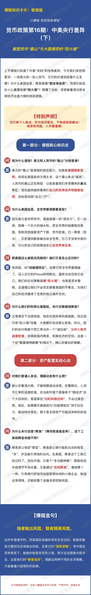
极简版卡片文字摘要
- Q：钱为什么值钱？美元、人民币各靠什么撑？
A：美元靠山=美国综合国力=国家信用，但现在欠债太多，靠山开始"摇晃"；人民币靠山正在转型——以前靠赚来的外汇，现在靠实体经济+国家信用"自立门户"。
- Q：为什么美国加息，全世界都紧张？
A：美元是世界货币，美国几乎没有外部约束——加息=大抽水机吸走全球的钱，降息=向外输出通胀。全世界只能被动适应。
- Q：美国这么干就没风险吗？咱们怎么应对？
A：有风险，叫"回旋镖效应"——把全世界都搞崩了，没人买它的iPhone和特斯拉，最终也伤到自己。我们的应对=建"防火墙"（资本管制），不必完全跟着美国的节奏走，为自己经济赢得独立操作空间。
- Q：为什么我们利率比美国低，央行还敢继续降息？
A：因为有"防火墙"挡着，大规模外流没那么容易；央行把汇率当"减压阀"，允许人民币适度贬值，换取国内降息、刺激经济的空间——这是"戴着镣铐跳舞"下精心权衡的策略。
- Q：普通人理解这些有什么用？
A：看清大势，不被短期波动迷惑。人民币适度贬值服务于"稳经济"大目标，是"以时间换空间"，不必恐慌；哪天美国因"回旋镖效应"顶不住压力被迫转向宽松，那才是全球资产可能迎来转机的信号。
- Q：为什么央行总提"降准"？它和降息有啥不同？
A：降息是让钱变"便宜"，降准是让银行能放出去的钱变"多"，还能引导钱的去向。降准在美国已过时，在中国是"多功能神器"：低成本调节水量 + "定向降准"引导银行把钱贷给小微企业、制造业 + 给整个金融系统控制风险。
- 爆姐金句："强者输出风险，智者隔离风险。"这不是道德评判，而是国际金融的现实生存法则——美元霸权输出风险（强者逻辑），中国筑牢防火墙隔离外部冲击（智者选择），看懂这两种生存策略，才能看懂大国博弈的底牌。